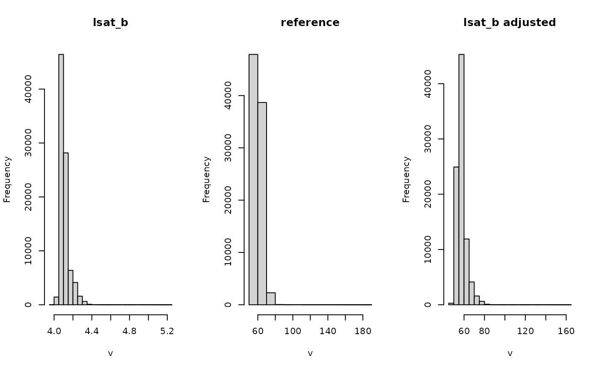
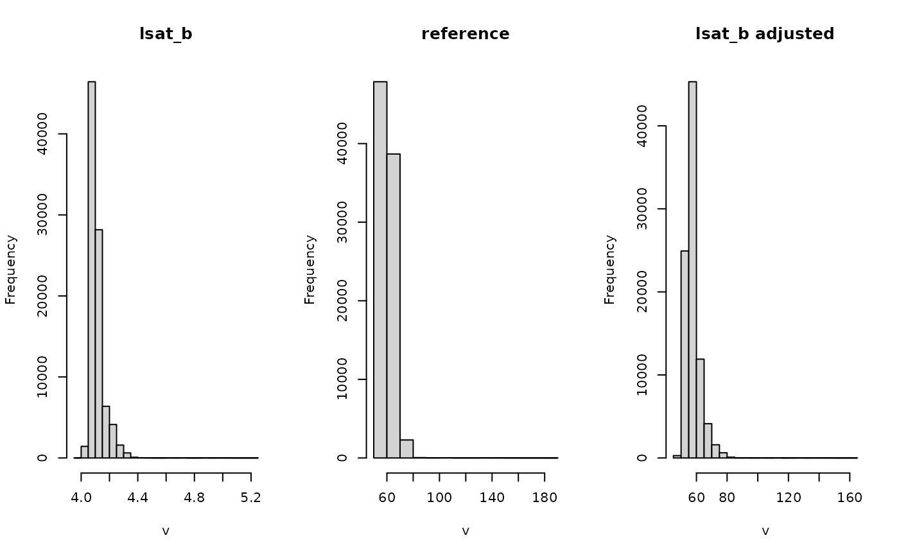

Match one scene to another based on linear regression of pseudo-invariant features (PIF).
Usage
pifMatch(
img,
ref,
method = "cor",
quantile = 0.95,
returnPifMap = TRUE,
returnSimMap = TRUE,
returnModels = FALSE
)Arguments
- img
SpatRaster. Image to be adjusted.
- ref
SpatRaster. Reference image.
- method
Method to calculate pixel similarity. Options: euclidean distance ('ed'), spectral angle ('sam') or pearson correlation coefficient ('cor').
- quantile
Numeric. Threshold quantile used to identify PIFs
- returnPifMap
Logical. Return a binary raster map ot pixels which were identified as pesudo-invariant features.
- returnSimMap
Logical. Return the similarity map as well
- returnModels
Logical. Return the linear models along with the adjusted image.
Value
Returns a List with the adjusted image and intermediate products (if requested).
img: the adjusted imagesimMap: pixel-wise similarity map (ifreturnSimMap = TRUE)pifMap: binary map of pixels selected as pseudo-invariant features (ifreturnPifMap = TRUE)models: list of linear models; one per layer (ifreturnModels = TRUE)
Details
The function consists of three main steps:
First, it calculates pixel-wise similarity between the two rasters and identifies pseudo-invariant pixels based on
a similarity threshold.
In the second step the values of the pseudo-invariant pixels are regressed against each other in a linear model for each layer.
Finally the linear models are applied to all pixels in the img, thereby matching it to the reference scene.
Pixel-wise similarity can be calculated using one of three methods: euclidean distance (method = "ed"), spectral angle ("sam") or pearsons correlation coefficient ("cor").
The threshold is defined as a similarity quantile. Setting quantile=0.95 will select all pixels with a similarity above the 95% quantile as pseudo-invariant features.
Model fitting is performed with simple linear models (lm); fitting one model per layer.
Examples
library(terra)
## Create fake example data
## In practice this would be an image from another acquisition date
lsat_b <- log(lsat)
## Run pifMatch and return similarity layer, invariant features mask and models
lsat_b_adj <- pifMatch(lsat_b, lsat, returnPifMap = TRUE,
returnSimMap = TRUE, returnModels = TRUE)
# \donttest{
## Pixelwise similarity
ggR(lsat_b_adj$simMap, geom_raster = TRUE)
 ## Pesudo invariant feature mask
ggR(lsat_b_adj$pifMap)
## Histograms of changes
par(mfrow=c(1,3))
hist(lsat_b[[1]], main = "lsat_b")
hist(lsat[[1]], main = "reference")
hist(lsat_b_adj$img[[1]], main = "lsat_b adjusted")

## Model summary for first band
summary(lsat_b_adj$models[[1]])
#>
#> Call:
#> lm(formula = ref ~ img, data = df)
#>
#> Residuals:
#> Min 1Q Median 3Q Max
#> -3.3904 -0.6021 0.0163 0.7107 24.6845
#>
#> Coefficients:
#> Estimate Std. Error t value Pr(>|t|)
#> (Intercept) -324.9027 0.9321 -348.6 <2e-16 ***
#> img 92.9473 0.2184 425.5 <2e-16 ***
#> ---
#> Signif. codes: 0 ‘***’ 0.001 ‘**’ 0.01 ‘*’ 0.05 ‘.’ 0.1 ‘ ’ 1
#>
#> Residual standard error: 1.373 on 4447 degrees of freedom
#> Multiple R-squared: 0.976, Adjusted R-squared: 0.976
#> F-statistic: 1.811e+05 on 1 and 4447 DF, p-value: < 2.2e-16
#>
# }
## Pesudo invariant feature mask
ggR(lsat_b_adj$pifMap)
## Histograms of changes
par(mfrow=c(1,3))
hist(lsat_b[[1]], main = "lsat_b")
hist(lsat[[1]], main = "reference")
hist(lsat_b_adj$img[[1]], main = "lsat_b adjusted")

## Model summary for first band
summary(lsat_b_adj$models[[1]])
#>
#> Call:
#> lm(formula = ref ~ img, data = df)
#>
#> Residuals:
#> Min 1Q Median 3Q Max
#> -3.3904 -0.6021 0.0163 0.7107 24.6845
#>
#> Coefficients:
#> Estimate Std. Error t value Pr(>|t|)
#> (Intercept) -324.9027 0.9321 -348.6 <2e-16 ***
#> img 92.9473 0.2184 425.5 <2e-16 ***
#> ---
#> Signif. codes: 0 ‘***’ 0.001 ‘**’ 0.01 ‘*’ 0.05 ‘.’ 0.1 ‘ ’ 1
#>
#> Residual standard error: 1.373 on 4447 degrees of freedom
#> Multiple R-squared: 0.976, Adjusted R-squared: 0.976
#> F-statistic: 1.811e+05 on 1 and 4447 DF, p-value: < 2.2e-16
#>
# }